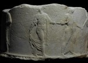

|
| | | | | | |
| noticeboard > acquisitions | ||||||||||||||||||||||||||||
|
> continued: The Corinth or Guilford Puteal In 1992 a letter was sent to the Department of Greek and Roman Antiquities at the British Museum by Peter Brears, curator of Leeds City Museum. He rightly surmised that a couple of sculptures then adorning the garden of the teacher training college at Bretton Hall were ancient and of interest. From his slide I was able to identify the Corinth or Guilford Puteal by matching the figures to the drawings of Pomardi and Stackelberg. The monument was conserved, though sadly plans to exhibit it came to nothing. In 2000 the college became part of Leeds University, and higher authorities dictated the removal of the now spotless puteal and an altar from the same collection to the art market. By 2002 a sale overseas had been negotiated, and the end of the monument's history in Britain seemed nigh. However, at that moment I was sent a Greek guide to Octavian's memorial campsite above Nicopolis, the city of victory built to celebrate his defeat of Antony and Cleopatra at nearby Actium. In his preface, the author Konstantinos L. Zachos described some well-preserved sculptures excavated too late for inclusion in the book. One of these, a semi-circular monument, bore a frieze of archaistic figures carved in low relief: Apollo, Artemis and Leto, Hermes leading three nymphs, Athena leading Herakles and an unidentified goddess. In September 2002 I was able to see the well-preserved sculpture in the Archaeological Museum at Ioannina. Compressed together to fit the semi-circular format were exactly the figures of the Corinth puteal, carved in the same archaistic style at similar scale. A second monument was found, unlike the first smashed into tiny fragments: this is decorated with similar archaising figures of deities. This exciting new discovery shed an entirely new light upon the significance of the puteal. Its date, hitherto a matter of unresolved debate, could now be fixed to the years of the reign of the first Roman emperor Augustus. Its significance was no longer purely decorative: the monument was surely commissioned to celebrate the victory of Actium in Corinth, recently re-founded as a Roman colony by Octavian's adoptive father Julius Caesar. Other related monuments are known, of which the closest is a fragmentary base from Ephesus in western Turkey, itself recycled for later use and now in the collections of the Kunsthistorisches Museum, Vienna. Decorated with some similar figures, but also others that do not appear on the puteal, this has a Greek inscription honouring the children of the recently deceased Agrippa, who had charge of Octavian's fleet at Actium. The
historic significance of the Corinth Puteal allowed the Department of
Culture, Media and Sport to stop its export while the British Museum raised
the necessary funds to acquire it. Thanks to the generosity of the Heritage
Lottery Fund, the National Art Collections Fund, the British Museum Friends
and the Caryatids of the Greek and Roman Department, any Friend of Classics
may admire the puteal, now displayed in the Round Reading Room in the
British Museum's Great Court. Research continues to try to fill the missing
gaps in its history-the story of its display at Bretton Hall, perhaps
in the stables built, significantly, in 1830 by Basevi, better known as
the architect of the Fitzwilliam Museum, Cambridge; not least, locating
in Corinth the likely original site of this monument, perhaps even with
part of its missing moulding restored. We also need to understand why
these particular deities and heroes were selected to celebrate a battle
that changed the course of history and determined even the way we live
today.
|

|
|
||||||||||||||||||||||||||
|
| ||||||||||||||||||||||||||||